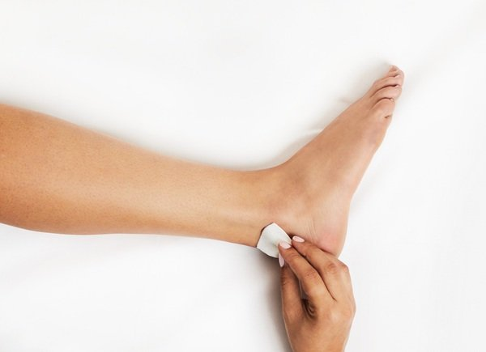

DPNCheck
DPNCheck is a fast, accurate, and quantitative test to evaluate peripheral neuropathies. DPNCheck is designed for use at the point of care to detect and stage peripheral neuropathies. The device measures nerve conduction velocity and response amplitude of the sural nerve in the lower leg. These parameters are sensitive and specific biomarkers for peripheral neuropathy.
Key Features
- Point-of-care test of sural nerve conduction
- Standard biomarker for peripheral neuropathy — sensitive and specific
- Quantitative assessment of nerve function
- Identifies pre-clinical peripheral neuropathy
Easy Operation
- 30–60 seconds per test
- Easily implemented in the clinic or home setting by medical assistants or other staff
- Reports standard, readily understood nerve conduction parameters
- Embedded quality control to ensure integrity of results
Clinical Challenges of Peripheral Neuropathy
Detection & Diagnosis
- Traditional screening tools often miss peripheral neuropathy3 and do not provide quantitative results or severity staging
- Peripheral neuropathy often has no clear signs or symptoms2
- Up to 50% of diabetic peripheral neuropathies may be asymptomatic2
Prevalence
- The prevalence of peripheral neuropathy in the general population is 10% and in patients over 65 it increases up to 30%1
- Over 50% of patients with diabetes will develop neuropathy2
- The rate of diagnosed neuropathy is often much lower than the prevalence rate resulting in unidentified risk
Complications
- Sensory loss leads to unrecognized skin trauma
- Peripheral sensory neuropathy is a compounding factor in fall risk in the elderly4
- Decreased quality of life
- Increased hospitalization rates5
Benefits
Benefits of Nerve Conduction Studies
- The gold standard diagnostic test for neuropathy
- Early neuropathy detection, definitive diagnosis
- Quantitative and objective
- Assess severity of neuropathy
DPNCheck Advantages
DPNCheck brings the benefits of nerve conduction studies to the point of care:
- Early detection of peripheral neuropathy, even in the absence of symptoms and signs
- Help confirm or rule-out peripheral neuropathy and quantify severity
- Monitor changes in peripheral neuropathy over time and in response to treatment
- Early diagnosis of peripheral neuropathy presents opportunities to intervene and reduce costs
- Identify those patients with neuropathy that are at highest risk for neuropathy related complications such as foot ulcers, neuropathic pain, and falls
Performing a Test
Step 1: Clean the skin
Step 2: Place biosensor

Step 3: Apply gel

Step 4: Select a limb

Step 5: Position & Start

Step 6: Get results

Test Results
The DPNCheck device reports 2 values:
- Amplitude
- Conduction Velocity
Clinical interpretation is straightforward with clearly defined normal limits (>4 microvolts & >40 meters per second). An interpretation guide is supplied with the device. Get detailed guidance on understanding your test results.
Optional PC software is available that provides the following:
- Hard copy or PDF report with waveforms and results
- Automatic comparison to normal limits
- Data archiving
- HL7 & XML data output for EMR integration

Care Management
DPNCheck results can guide both medical and preventative management strategies for patients with peripheral neuropathy.
Medical Management
Metabolic modifications (blood glucose, nutritional deficiencies) · Identification and elimination of toxins · Pain management
Preventative Management
Routine foot care · Podiatry referrals · Fall prevention programs
Validation
The accuracy, reliability, and utility of DPNCheck has been established with over 30 studies published in peer-reviewed journals. DPNCheck demonstrates high sensitivity and specificity for detecting peripheral neuropathy.
| Study | Type 2 | Type 1 | No Diabetes | Total | Diagnosis | Sensitivity | Specificity |
|---|---|---|---|---|---|---|---|
| Binns-Hall et al. 2018 | 231 | 5 | 0 | 236 | Clinical | 0.84 | 0.68 |
| Papanas et al. 2019 | 0 | 53 | 0 | 53 | Clinical | 0.96 | 0.93 |
| Chatzikosma et al. 2016 | 114 | 0 | 46 | 160 | Clinical | 0.91 | 0.86 |
| Hirayasu et al. 2018 | 92 | 0 | 0 | 92 | Clinical | 0.85 | 0.86 |
| Lee et al. 2014 | 28 | 16 | 0 | 44 | NCS | 0.95 | 0.71 |
| Kural et al. 2018 | 168 | 0 | 0 | 168 | NCS | 0.82 | 0.85 |
| Scarr et al. 2018 | 0 | 68 | 71 | 139 | NCS | 0.86 | 0.79 |
| Total | 633 | 142 | 117 | 892 | 0.88* | 0.82* |
*Summary sensitivity and specificity determined by bivariate meta-analysis. Note: Specificity when referenced against healthy controls is 95%.
Clinical Publications
- Hayashi et al. Simplified electrophysiological approach combining a point-of-care nerve conduction device and an electrocardiogram produces an accurate diagnosis of diabetic polyneuropathy. J Diabetes Investig. 2024
- Grabowska et al.Reliability of a novel point of care device for monitoring diabetic peripheral neuropathy. Sci Rep. 2023
- Selvarajah et al. Diabetic peripheral neuropathy: advances in diagnosis and strategies for screening and early intervention. The Lancet Diabetes & Endocrinology. 2019
- Binns-Hall et al. One-stop microvascular screening service: An effective model for the early detection of diabetic peripheral neuropathy and the high-risk foot. Diabetic Medicine. 2018
- Lee et al. Reliability and Validity of a Point-of-Care Sural Nerve Conduction Device for Identification of Diabetic Neuropathy. Plos One. Jan 2014
References
- Mold JW, et al. The Prevalence, predictors, and consequences of peripheral sensory neuropathy in older patients. J Am Board Fam Pract. 2004;17(5):309-318.
- Pop-Busui R, et al. Diabetic neuropathy: a position statement by the American Diabetes Association. Diabetes Care. 2017;40(1):136-154.
- Perkins BA, et al. Simple screening tests for peripheral neuropathy in the diabetes clinic. Diabetes Care. 2001;24(2):250-256.
- Richardson JK, Hurvitz EA. Peripheral neuropathy: a true risk factor for falls. J Gerontol A Biol Sci Med Sci. 1995;50(4):M211-M215.
- Romanelli RJ, et al. Patient characteristics and healthcare utilization of a chronic pain population within an integrated healthcare system. Am J Manag Care. 2017;23(2):e50-e56.
Cernode Electro-Diagnostic Neurology Products
Cernode is Alera Medtech's complete line of advanced needle electrodes built for neurology and critical care. The portfolio includes hypodermic needle electrodes, concentric needles, monopolar EMG needles, and IONM electrodes. These tools support EMG diagnostics, intraoperative monitoring, nerve conduction studies, stimulation, and targeted injections such as botulinum toxin or local anesthetics.
We designed Cernode to fix common problems that have persisted in these devices for decades: difficult insertion, unreliable signals, infection risks, safety concerns, and high costs. Compared to legacy neuro-diagnostic devices, Cernode brings significant improvements in performance, safety, and usability while maintaining affordability.
Cernode Portfolio – Innovation Highlights
- Optimized construction for strength and lightness
- Layered coatings that combine strong insulation, low friction, and antimicrobial protection
- Enhanced tip-geometry that reduces insertion force
- Advanced safety features that reduce needlestick risk and allow one-handed operation
- Ergonomic handle design with textured grip and haptic feedback for better control in high-patient-volume settings
Product-Specific Highlights
Hypodermic Needle Electrodes
Combine recording or stimulation with fluid delivery; focused on minimal dead volume and secure hub integration.
Concentric Needles
Bipolar setup for precise, localized EMG with reduced crosstalk — ideal for detailed nerve mapping.
Monopolar EMG Needles
Broader pickup area suited to standard diagnostic and nerve conduction studies.
IONM Electrodes
Built for continuous intraoperative or neurocritical monitoring with enhanced safety, strong artifact resistance, and fast setup.
SureSet™ Securement Devices
Vascular access devices (VADs), including central venous catheters (CVCs), peripherally inserted central catheters (PICCs), and peripheral intravenous catheters (PIVs), play a critical role in modern patient care. Despite their importance, these devices are frequently at risk for dislodgement, migration, and infection. Traditional securement methods typically focus on stabilizing the catheter hub; however, they often leave the infusion tubing exposed. This vulnerability is significant, as most accidental tension originates in the tubing rather than at the hub itself.
Tubing-related mechanical forces can lead to catheter failures, unnecessary device replacements, and increased healthcare costs due to associated complications. Addressing these risks is essential for ensuring both patient safety and operational efficiency in clinical and home-care settings.
SureSet™ SafeTrak™ Strain Relief Technology represents an innovative approach to vascular access securement by focusing on the entire catheter pathway. Unlike conventional methods, SafeTrak™ features a tubing-centric, strain-relief design that specifically targets and minimizes mechanical stress at the insertion site.
This advanced architecture helps protect against accidental dislodgement and migration, contributing to improved patient safety, greater comfort, and enhanced care efficiency. The benefits extend across diverse care environments, from hospitals and intensive care units to home infusion settings.
Visit suresetsecure.com for Full DetailsDuoflush™ Integrated Prefilled Flush Syringes
Duoflush is Alera Medtech's innovative prefilled saline flush syringe with an integrated disinfection unit. It targets essential IV-line maintenance in neurology and critical care settings, where consistent scrubbing and flushing help prevent catheter-related bloodstream infections (CRBSIs) and support smooth clinical workflows.
We created Duoflush to address longstanding issues in IV access devices: inconsistent compliance with "scrub the hub" protocols, risks of touch contamination, and inefficiencies in high-pressure environments like ICUs or neurocritical units. By combining active disinfection and flushing in one easy-to-use tool, Duoflush promotes aseptic techniques while reducing microbial growth and procedural steps.
Key Features & Innovations
- Integrated disinfection cap with 70% isopropyl alcohol pad for active scrubbing, demonstrated to cut microbial load from common pathogens
- Prefilled 10 mL saline syringe (0.9% sodium chloride) for immediate flushing, ensuring compatibility with standard needleless access devices (NADs)
- Ergonomic design with textured grip and one-handed activation to minimize errors during busy shifts
- Low-dead-volume hub to reduce waste and maintain precise saline delivery without air bubbles or leaks
- Antimicrobial additives in the cap for extended protection against bacteria and fungi
- Universal Luer-lock compatibility for seamless integration with IV lines, catheters, and extension sets
Duoflush stands out by streamlining the scrub-and-flush process, which studies show can nearly double compliance rates compared to separate alcohol swabs and syringes. This leads to fewer infections, lower healthcare costs, and better patient outcomes in critical procedures involving stroke care, neurostimulation, or long-term monitoring.
CRBSI remains one of
healthcare's costliest
preventable infections.
Needle-free connectors have dramatically improved IV access safety. But the connector septum — accessed dozens of times per admission — remains a high-risk contamination point between disinfection events.
Existing disinfecting caps rely on alcohol-saturated foam or sponge inserts with a fixed, short protection window. For patients on long-term IV therapy, this means either frequent cap changes (adding cost and nursing time) or an unprotected gap.
ClynCap™ was engineered to close that gap — delivering extended, consistent antimicrobial protection through a proprietary advanced material science platform, without any change to clinical workflow, connector hardware, or regulatory classification.
Three phases.
One cap.
Ten days.
ClynCap™ combines a proprietary multi-phase antimicrobial delivery architecture with a precision-engineered insert, achieving a sustained disinfection profile that no single-material cap can replicate.
Instant Activation
The moment ClynCap™ is applied, the septum surface receives immediate, full-coverage antimicrobial saturation — eliminating contamination risk at the point of application within seconds.
Sustained Release
A controlled, graduated delivery mechanism maintains effective antimicrobial concentration at the septum surface continuously — neither depleting rapidly nor fluctuating over the protection window.
Long-Tail Protection
A secondary antimicrobial reserve extends meaningful protection through days 7–10, providing a safety buffer that conventional caps cannot offer — critical for long-term IV patients.
Built around
the patient.
And the nurse.
ClynCap™ was designed to reduce infection risk and clinical burden simultaneously — without adding complexity to care pathways.
Extended 10-day protection
Up to 43% longer protection than the current 7-day market standard, reducing the frequency of cap changes required per admission.
Zero workflow disruption
ClynCap™ fits standard luer-lock needle-free connectors. No new training, no equipment changes, no protocol overhaul — it replaces existing disinfecting caps directly.
Dual-mechanism antimicrobial action
ClynCap™ combines two complementary antimicrobial pathways for broader-spectrum efficacy — reducing the risk of protection gaps as individual mechanisms diminish over time.
Cost reduction at scale
Fewer cap changes per patient per admission means lower consumable spend and reduced nursing time — measurable savings in high-volume ICU and oncology settings.
Consistent coverage
from day one
to day ten.
Unlike conventional caps that deliver a single burst of alcohol and then rely on residual vapour, ClynCap™ maintains a planned, phased antimicrobial profile across the full 10-day window.
Immediate septum saturation
Full-coverage antimicrobial contact within seconds of application. Eliminates residual contamination from the prior access event.
Primary sustained-release phase
Controlled diffusion maintains consistent antimicrobial activity across the core protection window — the longest and most clinically critical phase.
Extended protection tail
A secondary antimicrobial reserve activates as the primary phase concludes, extending meaningful protection through day 10 — a capability unique to ClynCap™.
Recommended replacement
Standard cap-change protocol resumes — at a frequency that can be reduced significantly versus current practice for many patient cohorts.
Precision engineered
to fit your existing
connector ecosystem.
ClynCap™ is designed for direct compatibility with standard needle-free connectors — no adapter, no modification, no new purchasing category required.
target duration
concentration
saturation on application
working simultaneously
Works with the connectors
you already use.
Simple to adopt. Straightforward to procure.
ClynCap™ retains the same disinfectant agent used in currently approved products, and is designed to fit within established device classification frameworks — streamlining the hospital procurement and approval process.
We work directly with procurement teams, infection control committees, and clinical leadership to support adoption at institutional level.